Paper: arXiv
Authors: Jonathan Shen *, Ye Jia *, Mike Chrzanowski, Yu Zhang, Isaac Elias, Heiga Zen, Yonghui Wu.
Abstract: This paper presents Non-Attentive Tacotron (NAT) based on the Tacotron 2 text-to-speech model, replacing the attention mechanism with an explicit duration predictor. This improves robustness significantly as measured by unaligned duration ratio and word deletion rate, two metrics introduced in this paper for large-scale robustness evaluation using a pre-trained speech recognition model. With the use of Gaussian upsampling, Non-Attentive Tacotron achieves a 5-scale mean opinion score for naturalness of 4.41, slightly outperforming Tacotron 2. The duration predictor enables both utterance-wide and per-phoneme control of duration at inference time. When accurate target durations are scarce or unavailable in the training data, we propose a method using a fine-grained variational auto-encoder to train the duration predictor in a semi-supervised or unsupervised manner, with results almost as good as supervised training.
Click here for more from the Tacotron team.
These examples are randomly sampled from the MOS evaluation set for Table 1 in the paper.
| NAT (Gaussian upsampling) | NAT (vanilla upsampling) | NAT (semi-supervised) | NAT (unsupervised) | Tacotron 2 (GMMA) | Tacotron 2 (LSA) |
|---|---|---|---|---|---|
| 1: Take the next left onto 42nd Avenue South. | |||||
| 2: Not sure how to help with: you be safe baby. | |||||
| 3: The Blair Witch Project actresses: Heather Donahue, Patricia DeCou, Jackie Hallex, and Sandra Sánchez. | |||||
| 4: According to wikiHow: Pour or spray white vinegar on the rusted surface in place of lemon juice for tougher stains. Let the vinegar sit for several minutes before scrubbing it with a wire brush. Rinse away the rust with some cold water and repeat for difficult stains. Scrub the surface of the concrete with a brush. | |||||
| 5: Yo mama's so magical, she got invited to Hogwarts. | |||||
These examples correspond to Table 3 in the paper. The pace is controlled by dividing the predicted phoneme durations by the factor for each column.
| 0.67x | 0.8x | 0.9x | 1.0x | 1.11x | 1.25x | 1.5x |
|---|---|---|---|---|---|---|
| 1: The best way to get to Lodi Enterprise by car is via I-80 E, and will take about 1 day and 6 hours in light traffic. | ||||||
| 2: Well, that gets a zero on the correctness scale. | ||||||
| 3: Sorry, I can't send messages yet. | ||||||
| 4: Do you want to do another Mad Lib? | ||||||
| 5: Okay, 3:33 PM. Setting your alarm... | ||||||
The audio samples and spectrograms in this section demonstrate single word pace control using NAT with supervised, semi-supervised, and unsupervised duration modeling. Bold words are slowed down by 1.5x. The samples in the first row are references in regular pace without any words slowed down.
The samples in the first column correspond to Figure 3 in the paper.
| NAT (Supervised) | NAT (Semi-supervised) | NAT (Unsupervised) | |
|---|---|---|---|
| 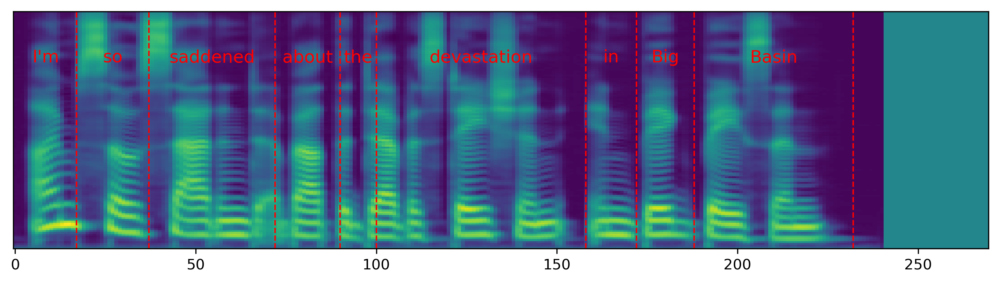 | 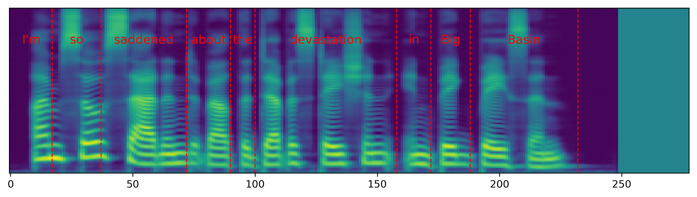 | 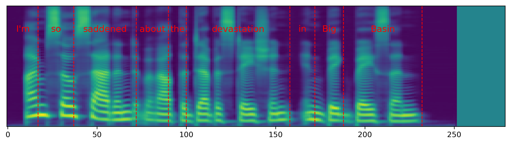 | |
| I'm so saddened about the devastation in Big Basin. | |||
| 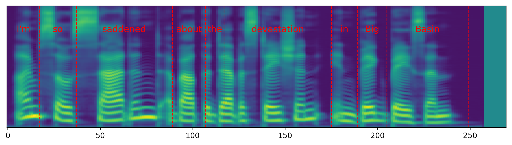 | 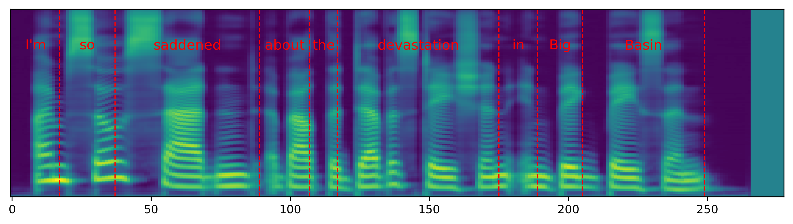 | 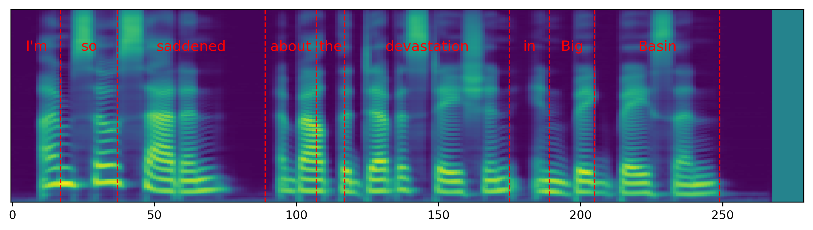 | |
| I'm so saddened about the devastation in Big Basin. | |||
| 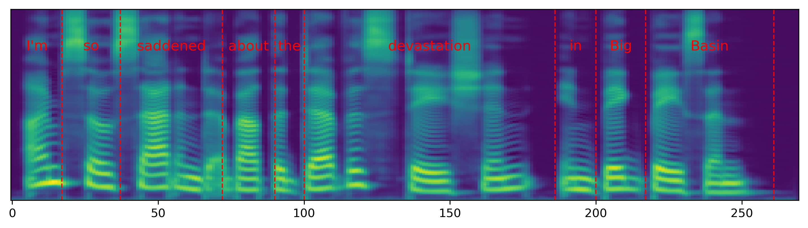 | 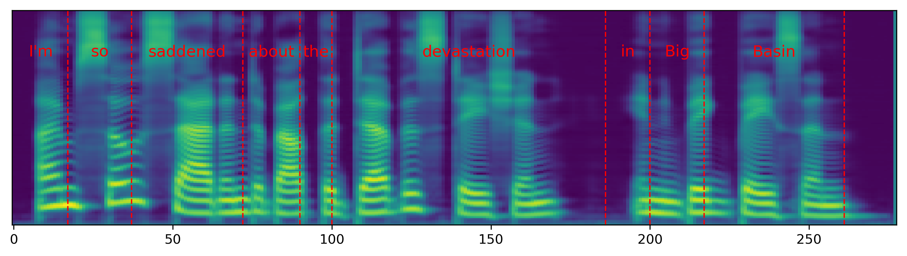 | 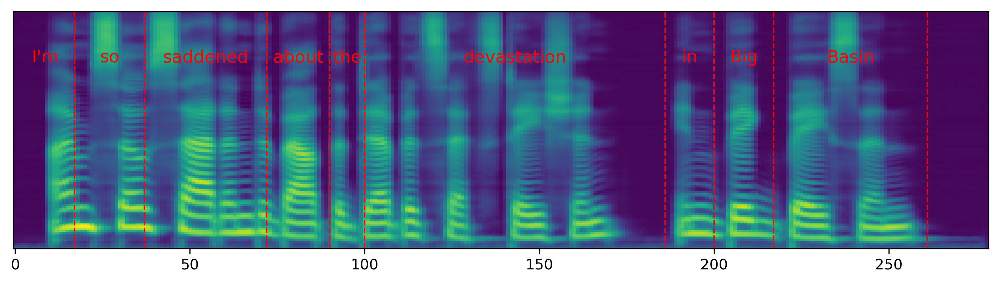 | |
| I'm so saddened about the devastation in Big Basin. | |||
| 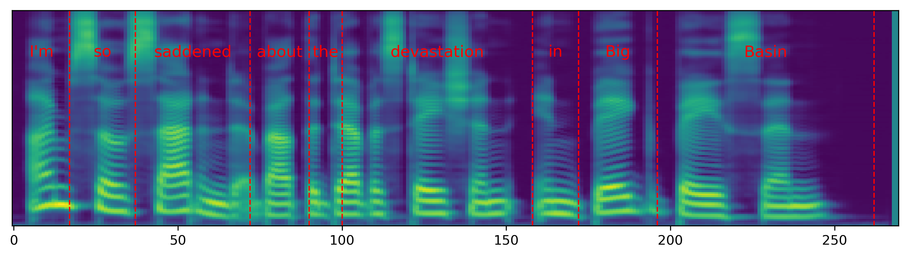 | 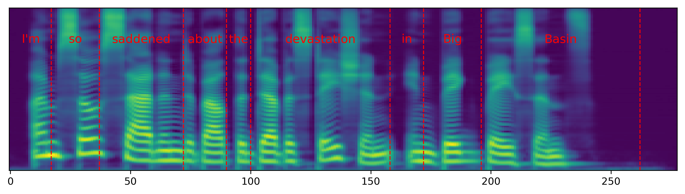 | 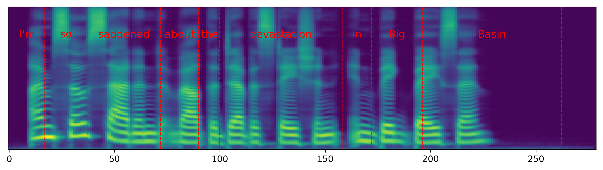 | |
| I'm so saddened about the devastation in Big Basin. |
These examples correspond to Figure 4 in the paper.
| 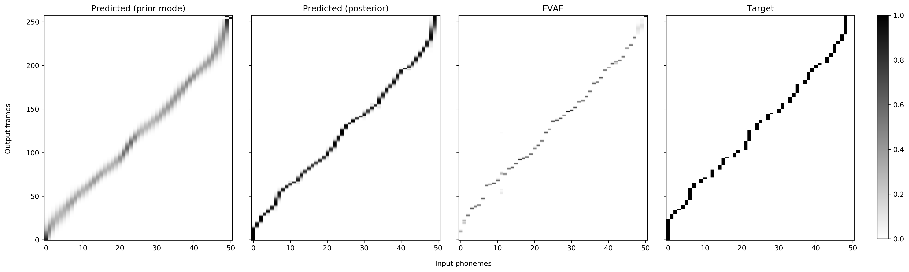 | |||||
| N/A | |||||